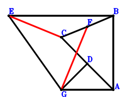
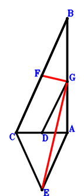
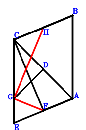
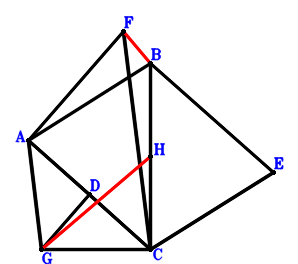
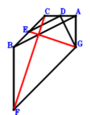
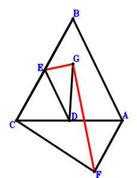

Exercise 1： Let EGAB be a trapezoid with EB//GA and EB=2GA. D, F are the midpoints of CA, BC, respectively. BA=2GD. Prove that EC⊥GF.

\(\because \) D is the midpoint of CA \(\therefore \small\overrightarrow{AD}=\dfrac{\small\overrightarrow{AC}}{2}\).\(\because \) EB//GA and EB=2GA \(\therefore \small\overrightarrow{AE}=\small\overrightarrow{AB} + 2 \small\overrightarrow{AG}\).\(\because \) F is the midpoint of BC \(\therefore \small\overrightarrow{AF}=\dfrac{\small\overrightarrow{AB}}{2} + \dfrac{\small\overrightarrow{AC}}{2}\).\(\because \) BA=2GD \( \therefore- \dfrac{\small\overrightarrow{AB}^{2}}{4} + \small\overrightarrow{DG}^{2}=- \dfrac{\small\overrightarrow{AB}^{2}}{4} + \left(- \small\overrightarrow{AD} + \small\overrightarrow{AG}\right)^{2}=- \dfrac{\small\overrightarrow{AB}^{2}}{4} + \left(- \dfrac{\small\overrightarrow{AC}}{2} + \small\overrightarrow{AG}\right)^{2}=- \dfrac{\small\overrightarrow{AB}^{2}}{4} + \dfrac{\small\overrightarrow{AC}^{2}}{4} - \small\overrightarrow{AC} \cdot \small\overrightarrow{AG} + \small\overrightarrow{AG}^{2}=0.\)In conclusion, \(\small\overrightarrow{EC} \cdot \small\overrightarrow{FG}=\left(\small\overrightarrow{AC} - \small\overrightarrow{AE}\right) \cdot \left(- \small\overrightarrow{AF} + \small\overrightarrow{AG}\right)=\left(- \small\overrightarrow{AB} + \small\overrightarrow{AC} - 2 \small\overrightarrow{AG}\right) \cdot \left(- \dfrac{\small\overrightarrow{AB}}{2} - \dfrac{\small\overrightarrow{AC}}{2} + \small\overrightarrow{AG}\right)=\dfrac{\small\overrightarrow{AB}^{2}}{2} - \dfrac{\small\overrightarrow{AC}^{2}}{2} + 2 \small\overrightarrow{AC} \cdot \small\overrightarrow{AG} - 2 \small\overrightarrow{AG}^{2}=0\), that is, EC⊥GF.
Exercise 4： Let BCEA be a trapezoid with CB//EA and CB=2EA. D, F are the midpoints of CA, CB, respectively. BA=2DG. Prove that FG⊥GE.

\(\because \) D is the midpoint of CA \(\therefore \small\overrightarrow{AD}=\dfrac{\small\overrightarrow{AC}}{2}\).\(\because \) CB//EA and CB=2EA \(\therefore \small\overrightarrow{AE}=- \dfrac{\small\overrightarrow{AB}}{2} + \dfrac{\small\overrightarrow{AC}}{2}\).\(\because \) F is the midpoint of CB \(\therefore \small\overrightarrow{AF}=\dfrac{\small\overrightarrow{AB}}{2} + \dfrac{\small\overrightarrow{AC}}{2}\).\(\because \) BA=2DG \( \therefore- \dfrac{\small\overrightarrow{AB}^{2}}{4} + \small\overrightarrow{DG}^{2}=- \dfrac{\small\overrightarrow{AB}^{2}}{4} + \left(- \small\overrightarrow{AD} + \small\overrightarrow{AG}\right)^{2}=- \dfrac{\small\overrightarrow{AB}^{2}}{4} + \left(- \dfrac{\small\overrightarrow{AC}}{2} + \small\overrightarrow{AG}\right)^{2}=- \dfrac{\small\overrightarrow{AB}^{2}}{4} + \dfrac{\small\overrightarrow{AC}^{2}}{4} - \small\overrightarrow{AC} \cdot \small\overrightarrow{AG} + \small\overrightarrow{AG}^{2}=0.\)In conclusion, \(\small\overrightarrow{FG} \cdot \small\overrightarrow{GE}=\left(\small\overrightarrow{AE} - \small\overrightarrow{AG}\right) \cdot \left(- \small\overrightarrow{AF} + \small\overrightarrow{AG}\right)=\left(- \dfrac{\small\overrightarrow{AB}}{2} - \dfrac{\small\overrightarrow{AC}}{2} + \small\overrightarrow{AG}\right) \cdot \left(- \dfrac{\small\overrightarrow{AB}}{2} + \dfrac{\small\overrightarrow{AC}}{2} - \small\overrightarrow{AG}\right)=\dfrac{\small\overrightarrow{AB}^{2}}{4} - \dfrac{\small\overrightarrow{AC}^{2}}{4} + \small\overrightarrow{AC} \cdot \small\overrightarrow{AG} - \small\overrightarrow{AG}^{2}=0\), that is, FG⊥GE.
Exercise 8： Let BAEC be a parallelogram. BAFC is a trapezoid with BC//AF and BC=2AF. D, H are the midpoints of AC, BC, respectively. EC=2GD. Prove that FG⊥GH.

\(\because \) D is the midpoint of AC \(\therefore \small\overrightarrow{CD}=\dfrac{\small\overrightarrow{CA}}{2}\).\(\because \) BAEC is a parallelogram \(\therefore \small\overrightarrow{CE}=\small\overrightarrow{CA} - \small\overrightarrow{CB}\).\(\because \) BC//AF and BC=2AF \(\therefore \small\overrightarrow{CF}=\small\overrightarrow{CA} - \dfrac{\small\overrightarrow{CB}}{2}\).\(\because \) H is the midpoint of BC \(\therefore \small\overrightarrow{CH}=\dfrac{\small\overrightarrow{CB}}{2}\).\(\because \) EC=2GD \( \therefore\small\overrightarrow{DG}^{2} - \dfrac{\small\overrightarrow{EC}^{2}}{4}=- \dfrac{\small\overrightarrow{CE}^{2}}{4} + \left(- \small\overrightarrow{CD} + \small\overrightarrow{CG}\right)^{2}=\left(- \dfrac{\small\overrightarrow{CA}}{2} + \small\overrightarrow{CG}\right)^{2} - \dfrac{\left(\small\overrightarrow{CA} - \small\overrightarrow{CB}\right)^{2}}{4}=\dfrac{\small\overrightarrow{CA} \cdot \small\overrightarrow{CB}}{2} - \small\overrightarrow{CA} \cdot \small\overrightarrow{CG} - \dfrac{\small\overrightarrow{CB}^{2}}{4} + \small\overrightarrow{CG}^{2}=0.\)In conclusion, \(\small\overrightarrow{GF} \cdot \small\overrightarrow{HG}=\left(\small\overrightarrow{CF} - \small\overrightarrow{CG}\right) \cdot \left(\small\overrightarrow{CG} - \small\overrightarrow{CH}\right)=\left(- \dfrac{\small\overrightarrow{CB}}{2} + \small\overrightarrow{CG}\right) \cdot \left(\small\overrightarrow{CA} - \dfrac{\small\overrightarrow{CB}}{2} - \small\overrightarrow{CG}\right)=- \dfrac{\small\overrightarrow{CA} \cdot \small\overrightarrow{CB}}{2} + \small\overrightarrow{CA} \cdot \small\overrightarrow{CG} + \dfrac{\small\overrightarrow{CB}^{2}}{4} - \small\overrightarrow{CG}^{2}=0\), that is, FG⊥GH.
Exercise 11： Let BACE be a parallelogram. FAGC is a trapezoid with FC//AG and FC=2AG. D, H are the midpoints of AC, BC, respectively. CE=2GD. Prove that FB⊥GH.

\(\because \) D is the midpoint of AC \(\therefore \small\overrightarrow{CD}=\dfrac{\small\overrightarrow{CA}}{2}\).\(\because \) BACE is a parallelogram \(\therefore \small\overrightarrow{CE}=- \small\overrightarrow{CA} + \small\overrightarrow{CB}\).\(\because \) FC//AG and FC=2AG \(\therefore \small\overrightarrow{CF}=2 \small\overrightarrow{CA} - 2 \small\overrightarrow{CG}\).\(\because \) H is the midpoint of BC \(\therefore \small\overrightarrow{CH}=\dfrac{\small\overrightarrow{CB}}{2}\).\(\because \) CE=2GD \( \therefore- \dfrac{\small\overrightarrow{CE}^{2}}{4} + \small\overrightarrow{DG}^{2}=- \dfrac{\small\overrightarrow{CE}^{2}}{4} + \left(- \small\overrightarrow{CD} + \small\overrightarrow{CG}\right)^{2}=- \dfrac{\left(- \small\overrightarrow{CA} + \small\overrightarrow{CB}\right)^{2}}{4} + \left(- \dfrac{\small\overrightarrow{CA}}{2} + \small\overrightarrow{CG}\right)^{2}=\dfrac{\small\overrightarrow{CA} \cdot \small\overrightarrow{CB}}{2} - \small\overrightarrow{CA} \cdot \small\overrightarrow{CG} - \dfrac{\small\overrightarrow{CB}^{2}}{4} + \small\overrightarrow{CG}^{2}=0.\)In conclusion, \(\small\overrightarrow{BF} \cdot \small\overrightarrow{HG}=\left(- \small\overrightarrow{CB} + \small\overrightarrow{CF}\right) \cdot \left(\small\overrightarrow{CG} - \small\overrightarrow{CH}\right)=\left(- \dfrac{\small\overrightarrow{CB}}{2} + \small\overrightarrow{CG}\right) \cdot \left(2 \small\overrightarrow{CA} - \small\overrightarrow{CB} - 2 \small\overrightarrow{CG}\right)=- \small\overrightarrow{CA} \cdot \small\overrightarrow{CB} + 2 \small\overrightarrow{CA} \cdot \small\overrightarrow{CG} + \dfrac{\small\overrightarrow{CB}^{2}}{2} - 2 \small\overrightarrow{CG}^{2}=0\), that is, FB⊥GH.
Exercise 13： Let BFGA be a trapezoid with FB//GA and FB=2GA. D, E are the midpoints of AC, BC, respectively. GD=ED. Prove that FC⊥GE.

\(\because \) D is the midpoint of AC \(\therefore \small\overrightarrow{CD}=\dfrac{\small\overrightarrow{CA}}{2}\).\(\because \) E is the midpoint of BC \(\therefore \small\overrightarrow{CE}=\dfrac{\small\overrightarrow{CB}}{2}\).\(\because \) FB//GA and FB=2GA \(\therefore \small\overrightarrow{CF}=- 2 \small\overrightarrow{CA} + \small\overrightarrow{CB} + 2 \small\overrightarrow{CG}\).\(\because \) GD=ED \( \therefore- \small\overrightarrow{DE}^{2} + \small\overrightarrow{DG}^{2}=- \left(- \small\overrightarrow{CD} + \small\overrightarrow{CE}\right)^{2} + \left(- \small\overrightarrow{CD} + \small\overrightarrow{CG}\right)^{2}=- \left(- \dfrac{\small\overrightarrow{CA}}{2} + \dfrac{\small\overrightarrow{CB}}{2}\right)^{2} + \left(- \dfrac{\small\overrightarrow{CA}}{2} + \small\overrightarrow{CG}\right)^{2}=\dfrac{\small\overrightarrow{CA} \cdot \small\overrightarrow{CB}}{2} - \small\overrightarrow{CA} \cdot \small\overrightarrow{CG} - \dfrac{\small\overrightarrow{CB}^{2}}{4} + \small\overrightarrow{CG}^{2}=0.\)In conclusion, \(\small\overrightarrow{EG} \cdot \small\overrightarrow{FC}=- \small\overrightarrow{CF} \cdot \left(- \small\overrightarrow{CE} + \small\overrightarrow{CG}\right)=- \left(- \dfrac{\small\overrightarrow{CB}}{2} + \small\overrightarrow{CG}\right) \cdot \left(- 2 \small\overrightarrow{CA} + \small\overrightarrow{CB} + 2 \small\overrightarrow{CG}\right)=- \small\overrightarrow{CA} \cdot \small\overrightarrow{CB} + 2 \small\overrightarrow{CA} \cdot \small\overrightarrow{CG} + \dfrac{\small\overrightarrow{CB}^{2}}{2} - 2 \small\overrightarrow{CG}^{2}=0\), that is, FC⊥GE.
Exercise 16： Let FCBA be a trapezoid with CB//FA and CB=2FA. D, E are the midpoints of AC, CB, respectively. GD=DE. Prove that FG⊥GE.

\(\because \) D is the midpoint of AC \(\therefore \small\overrightarrow{CD}=\dfrac{\small\overrightarrow{CA}}{2}\).\(\because \) E is the midpoint of CB \(\therefore \small\overrightarrow{CE}=\dfrac{\small\overrightarrow{CB}}{2}\).\(\because \) CB//FA and CB=2FA \(\therefore \small\overrightarrow{CF}=\small\overrightarrow{CA} - \dfrac{\small\overrightarrow{CB}}{2}\).\(\because \) GD=DE \( \therefore- \small\overrightarrow{DE}^{2} + \small\overrightarrow{DG}^{2}=- \left(- \small\overrightarrow{CD} + \small\overrightarrow{CE}\right)^{2} + \left(- \small\overrightarrow{CD} + \small\overrightarrow{CG}\right)^{2}=- \left(- \dfrac{\small\overrightarrow{CA}}{2} + \dfrac{\small\overrightarrow{CB}}{2}\right)^{2} + \left(- \dfrac{\small\overrightarrow{CA}}{2} + \small\overrightarrow{CG}\right)^{2}=\dfrac{\small\overrightarrow{CA} \cdot \small\overrightarrow{CB}}{2} - \small\overrightarrow{CA} \cdot \small\overrightarrow{CG} - \dfrac{\small\overrightarrow{CB}^{2}}{4} + \small\overrightarrow{CG}^{2}=0.\)In conclusion, \(\small\overrightarrow{EG} \cdot \small\overrightarrow{GF}=\left(- \small\overrightarrow{CE} + \small\overrightarrow{CG}\right) \cdot \left(\small\overrightarrow{CF} - \small\overrightarrow{CG}\right)=\left(- \dfrac{\small\overrightarrow{CB}}{2} + \small\overrightarrow{CG}\right) \cdot \left(\small\overrightarrow{CA} - \dfrac{\small\overrightarrow{CB}}{2} - \small\overrightarrow{CG}\right)=- \dfrac{\small\overrightarrow{CA} \cdot \small\overrightarrow{CB}}{2} + \small\overrightarrow{CA} \cdot \small\overrightarrow{CG} + \dfrac{\small\overrightarrow{CB}^{2}}{4} - \small\overrightarrow{CG}^{2}=0\), that is, FG⊥GE.